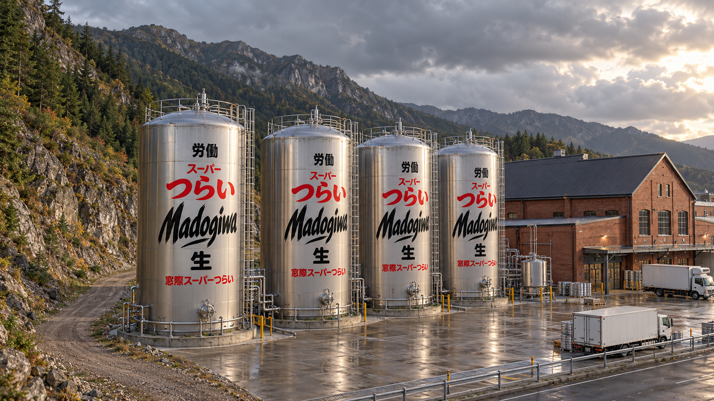
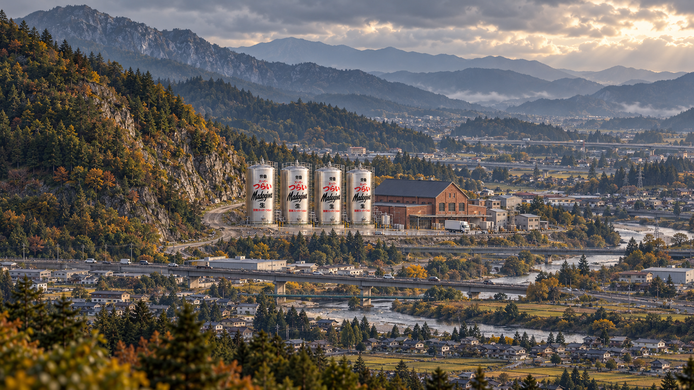
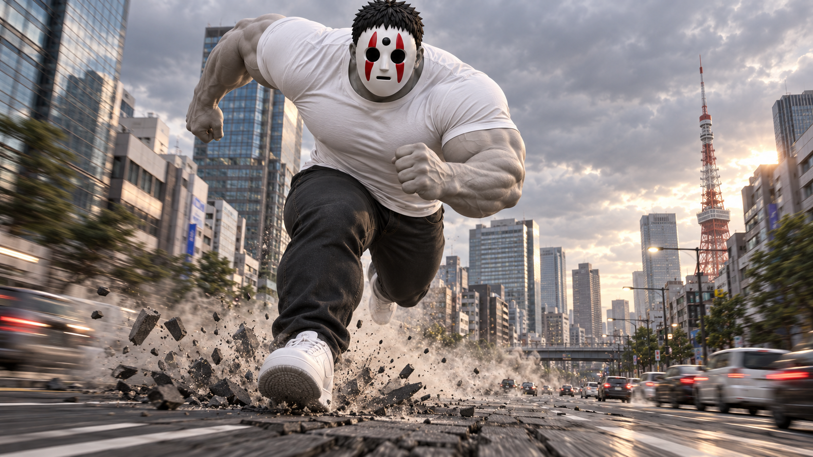
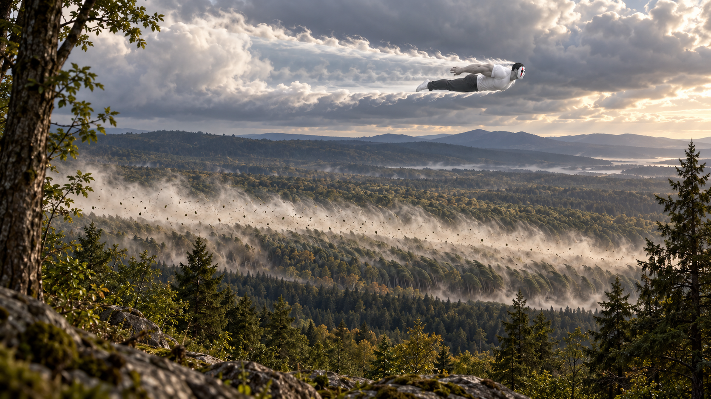
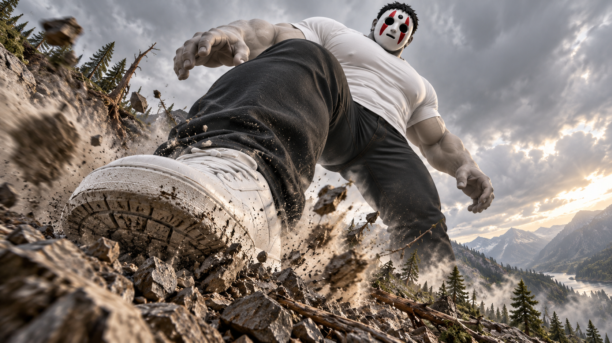
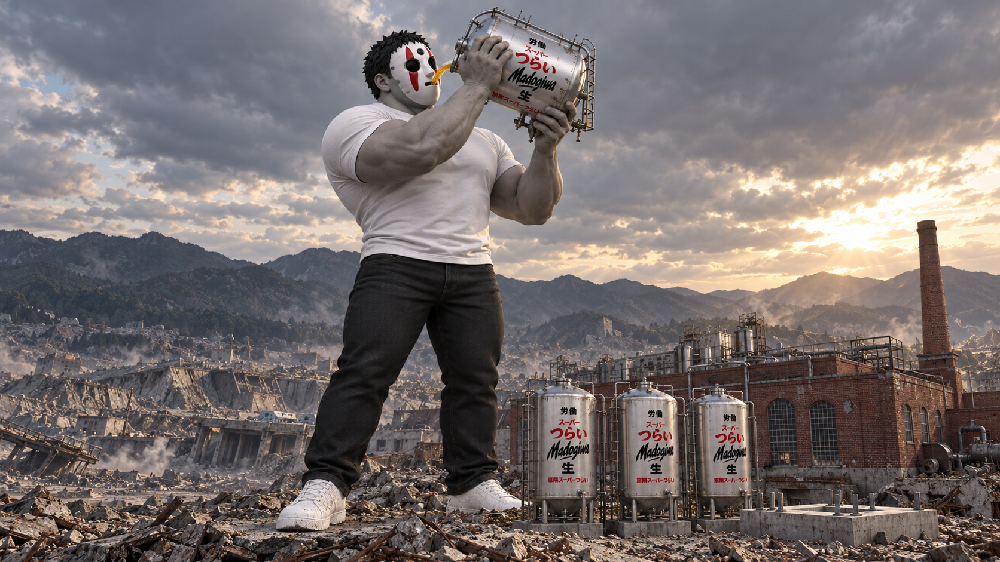

工場：小型工業タンク

1672×941 — 工場外観の参照。設定上は15mタンク4基、そば屋100m。
すべて新規生成。旧版は保持。画像をクリックすると原寸。動画の追加生成は未実行。

1672×941 — 工場外観の参照。設定上は15mタンク4基、そば屋100m。

1672×941 — 新工場へ更新。そば屋なし主観。

1672×941 — 発見から戻ると既に加速済み。

1672×941 — 遠方の通過と奥から手前への衝撃波。時間順は動画プロンプトで指定。

1672×941 — 足元から見上げる怪獣映画型。

1672×941 — 停止位置のレビュー候補。タンク比率はまだ大きめのためAPI入力には含めない。

1672×941 — 持ち方と相対サイズのみ採用。背景工場はImage2を優先。

1672×941 — タンクが大きいため不採用。比較用に保持。